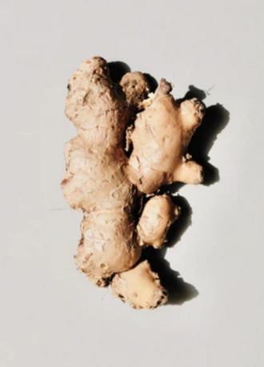

しょうが（生姜）の生産量 都道府県ランキング
1位から3位までと、とれた量
しょうがが日本でいちばん多くとれるのは高知県です。1万8,000 tで、全国（4万900 t）の44%を占めます。

| 順位 | 都道府県 | 収穫量 | 全国に占める割合 |
|---|---|---|---|
| 1位 | 高知県 | 1万8,000 t | 44% |
| 2位 | 千葉県 | 4,630 t | 11% |
| 3位 | 熊本県 | 4,030 t | 9.9% |
この数字について
- 分類：ショウガ科
- 全国の収穫量：4万900 t
- この数字が表すもの：収穫量（畑や田でとれた重さ）
- 調査：作物統計調査 作況調査（野菜） 令和6年産
- 11県分を調査（調査していない県は順位に入りません）
しょうがの生産量について、よくある質問
- しょうがの生産量が日本一の都道府県はどこですか？
- 高知県です。作物統計調査 作況調査（野菜）（令和6年産）で1万8,000 tでした。
- しょうがの生産量ランキング2位・3位はどこですか？
- 2位は千葉県（4,630 t）、3位は熊本県（4,030 t）です。
- しょうがの全国の生産量はどれくらいですか？
- 4万900 t（令和6年産）です。